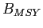

Next: Methods - was ``The Up: Assessing the knowledge-base for Previous: Abstract
Marine wild capture fisheries provide more than 80 million tons of fisheries products (both food and industrial) per year and employ 43.5 million people (wild capture and aquaculture, FAO (2009)). At the same time, fishing has been recognized as one of the most widespread human impacts in the world's oceans (Halpern et al., 2008), and the UN Food and Agriculture Organization estimates that two-thirds of fish stocks are fully exploited or overexploited (FAO, 2009). While many fisheries have reduced exploitation rates to levels that should promote recovery, overfishing continues to be a serious global problem (Worm et al., 2009). Fishery managers are asked to address multiple competing objectives including maximizing yields, ensuring profitability, reducing bycatch, and minimizing the risk of overfishing. Given the enormous social and economic costs (Rice et al., 2003) and ecosystems consequences (Myers et al., 2007; Frank et al., 2005) of collapsed fisheries, it is imperative that we are able to quickly learn the lessons of successful and failed fisheries from around the world.
Effective management of exploited fish populations generally requires an understanding of where the current population size and harvest rate lie in relation to the population size and harvest rate which maximize fishery benefits or limit the risk of overfishing. This process of quantitative determination of stock status and estimation of reference points is called stock assessment. Some fisheries in developing countries have apparently provided sustainable yields for long periods of time without formal stock assessment (e.g., many community-managed fisheries in Oceania, Johannes (2002)). This has been achieved by limiting harvest rates, often through gear restrictions or seasonal or area closures. In modern industrialized fisheries where fishing capacity exceeds the productivity of fished stocks, however, stock assessment is an integral component of responsible management (Hilborn & Walters, 1992).
Even in developed countries, however, not all stocks are assessed. For example, in 2007, of the 528 fish and invertebrate stocks recognized by the National Marine Fisheries Service (NMFS), only 179 or slightly over one third were fully assessed (National Marine Fisheries Service, 2008). An assessment by the European Environment Agency (EEA) in 2006 indicated that the percentage of commercial landings obtained from assessed stocks ranged between 66-97 percent in northern European waters and 30-77 percent in the Mediterranean (European Environment Agency, 2009). The New Zealand Ministry of Fisheries reports the status of 117 stocks or sub-stocks out of a total of 628 stocks managed under New Zealand's Quota Management System (New Zealand Ministry of Fisheries, 2009). In Australia, 98 federally managed stocks have been assessed (Wilson et al., 2009) out of an unknown total. The extent to which stocks are assessed elsewhere in the world is currently unknown.
The global database of fishery landings compiled by Food and Agricultural Organization of the United Nations (FAO, 2009) and synthesized by the Sea Around Us project (Watson et al., 2004) has proven to be a valuable resource for understanding fishery status; however, catch data alone can be misleading when used as a proxy for stock size. Many papers have used these catch databases to examine changes in fishery status (Worm et al., 2006; Costello et al., 2008), including changes in trophic level (Essington et al., 2006; Pauly et al., 1998; Newton et al., 2007). Most of these analyses rely (either explicitly or implicitly) on the assumption that catch or landings is a reliable index of stock size. Critics have pointed out that catch can change for a number of reasons unrelated to stock size, including changes in targeting, fishing restrictions, or market preferences (Hilborn, 2007; Murawski et al., 2007; de Mutsert et al., 2008). Even when catch is standardized by the amount of fishing effort (catch-per-unit-of-effort, CPUE), it can be an unreliable index of relative abundance (Walters, 2003; Harley et al., 2001; Polacheck, 2006; Hutchings & Myers, 1994). Stock assessments consider time series of catch along with other sources of information such as: natural mortality rates, changes in size or age composition, stock-recruitment relationships, and CPUE of different sectors or of fishery-independent surveys. Because they integrate across multiple sources of information, stock assessment models are thought to provide a more accurate picture of changes in abundance than catch data alone (Sibert et al., 2006). Yet, without a current and comprehensive database of stock assessments, scientists wishing to conduct comparative analyses of marine fish population dynamics and fishery status have little choice but to use problematic catch data.
The first global database of stock assessment information, the Myers
Stock Recruitment Database, was developed by Ransom Myers and
colleagues in the mid-1990s (Myers et al., 1995b). While
the database was primarily known for its time series of stock and
recruitment, it did contain time series of fishing mortality rates for
many stocks but biological reference points were largely absent. The
original release version of the Myers database
(Myers et al., 1995b) contained spawning stock size and recruitment time series
for 274 stocks representing 92 species as well as time series of
fishing mortality rates for 144 stocks.
It was used to:
![\begin{inparaenum}[1\upshape )]\item
decisively answer the question of whether ...
...Myers:etal:1999:cjfas, Myers:etal:2002:najfm,
Dorn:2002:najfm} \end{inparaenum}](img2.png)
, amongst others. The Myers
database has also been used for several studies of collapse and
recovery of exploited fish populations (Hilborn, 1997; Hutchings, 2000,2001) and to study depensation dynamics (Garvey et al., 2009).
Although the original Myers database (Myers et al., 1995b) has proven to be a valuable resource, it is now 15 years out of date. For stocks that were depleted in 1995, these additional 15 years include valuable observations at low stock size or of a recovering population, both of which are critical for estimating population dynamics parameters such as the slope of the stock-recruitment relationship near the origin and for evaluating evidence for depensation. In addition, there have been numerous improvements in stock assessment methodologies (including important advances in statistical catch-at-age or catch-at-length models) and assessments have been conducted for the first time for many species.
Previous meta-analyses of fishery status have been hampered by the
lack of a global assessment database containing biological reference
points (BRPs, e.g., the biomass and fishing mortality rate that
produce maximum sustainable yield,  and  ). Knowledge of BRPs
is important if stocks are to be managed for high yields that can be
sustained over time (Mace, 1994). Without information on
reference points, previous analyses of stock assessments or catch data
have been forced to use non-biological thresholds to define fishery
status, such as the greatest 15 year decline
(Hutchings &
Reynolds, 2004) or 10 percent of maximum catch
(Worm et al., 2006). Ad hoc reference points based on some
fraction of the maximum of a time series also have undesirable
statistical properties and can result in false collapses when applied
to inherently variable time series of catch or abundance
(Branch, 2008; Wilberg & Miller, 2007). Complicating
comparisons of fishery status is the fact that different BRPs are used
in different parts of the world and even the same BRP can be used in a
different manner, for example, as a target or a limit.
). Knowledge of BRPs
is important if stocks are to be managed for high yields that can be
sustained over time (Mace, 1994). Without information on
reference points, previous analyses of stock assessments or catch data
have been forced to use non-biological thresholds to define fishery
status, such as the greatest 15 year decline
(Hutchings &
Reynolds, 2004) or 10 percent of maximum catch
(Worm et al., 2006). Ad hoc reference points based on some
fraction of the maximum of a time series also have undesirable
statistical properties and can result in false collapses when applied
to inherently variable time series of catch or abundance
(Branch, 2008; Wilberg & Miller, 2007). Complicating
comparisons of fishery status is the fact that different BRPs are used
in different parts of the world and even the same BRP can be used in a
different manner, for example, as a target or a limit.
Here we present a new global database of stock assessments for commercially exploited marine fish populations. The database is an update and extension of that developed by Ransom Myers, and is named the RAM Legacy database in honor of his pioneering contribution. This effort is the first global stock assessment database to:
We use the database to assess the knowledge-base for management of marine fish populations and address the following questions:
Stock-recruitment database administrator 2010-04-15